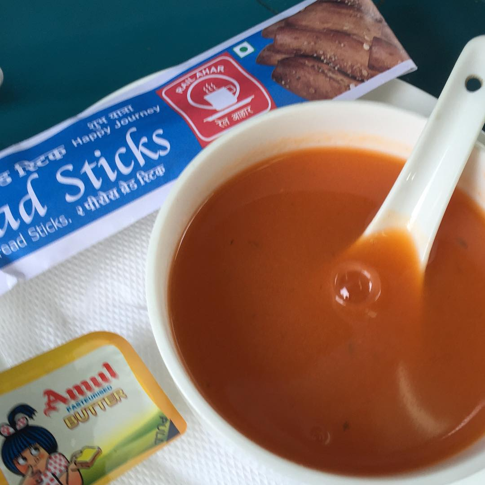
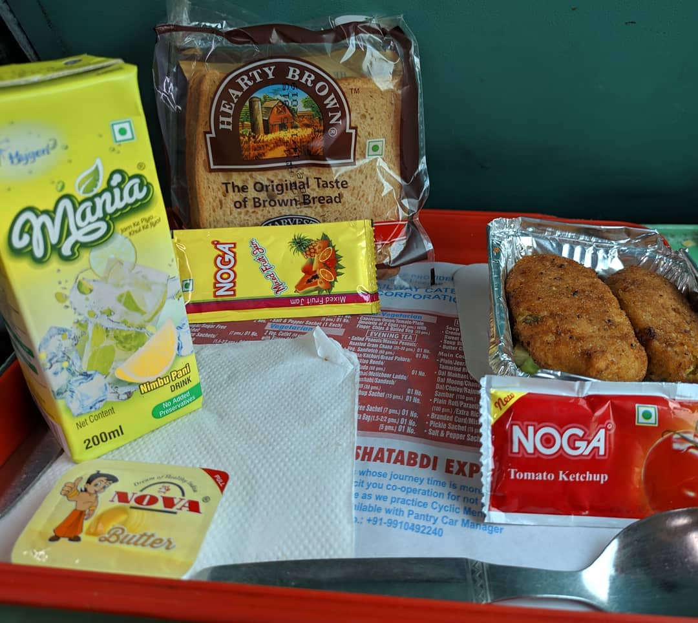

To provide quality and a wider range of cuisine while traveling, IRCTC has introduced its cantering Service.
These services can be enjoyed with booking of all classes expect SL and GEN.
New IRCTC menu for Rajdhani, Shatabdi, Duronto & Mail/Express:
The full revised menu with details of ingredients and options which will be offered in Rajdhani, Shatabdi, Duronto and Mail/Express trains are as follows:

Menu for Rajdhani/Shatabdi/Duronto Express Trains :
Morning Tea- Rajdhani/Shatabdi/Duronto Express Trains (1AC/EC)
Branded digestive biscuits
Tea/coffee kit with sugar sachets/sugar free sachets on demand, coffee, tea bags, creamer sachet
Breakfast- Rajdhani/Shatabdi/Duronto Express Trains (1AC/EC)
Cornflakes
Bread slices (white/brown)
Mixed fruit jam in sachet
Butter in blister pack
Tea/coffee kit with sugar sachets/sugar free sachets on demand, coffee, tea bags, creamer sachet
North- 2 aloo parantha, branded curd, pickle, salt sachet/2 cutlet with boiled vegetable (carrots, french beans, green peas), french fries, tomato ketchup sachet, salt and pepper sachet. Another option includes 2 egg omelette/fried boiled/poached/scrambled with boiled vegetables (beans, carrots, peas), tomato ketchup sachet, salt and pepper sachet.
East- 2 aloo parantha, branded curd, pickle, salt sachet/2 cutlet with boiled vegetable (carrots, french beans, green peas), french fries, tomato ketchup sachet, salt and pepper sachet. Another option includes 2 egg omelette/fried boiled/poached/scrambled with boiled vegetables (beans, carrots, peas), tomato ketchup sachet, salt and pepper sachet
West- Poha with 2 aloo bonda, bhujia, tomato ketchup sachet, salt sachet, 2 cutlet with boiled vegetable (carrots, french beans, green peas), french fries, tomato ketchup sachet, salt and pepper sachet. Another option includes 2 egg omelette/fried boiled/poached/scrambled with boiled vegetables (beans, carrots, peas), tomato ketchup sachet, salt and pepper sachet.
South- 2 idli/rice pongal/rava upma with medu vada with coconut chutney. Another option includes 2 egg omelette/fried boiled/poached/scrambled with boiled vegetables (beans, carrots, peas), tomato ketchup sachet, salt and pepper sachet.

For main course- Basmati rice-plain rice/jeera rice/matar pulao/fried rice/lemon rice/tamarind rice, 4 plain roti/2 parantha/extra rice in place of roti with parantha wrapper
Dal dish- dal tadka/kabuli chana/rajma/dal makhani/chana dal/chholey/chana/dal arhar/moong dal/sambhar
Meal 1- Vegetarian paneer dish; North, East, West-Paneer do pyaza/kadhai paneer/matar paneer/shahi paneer; South- Vegetable poriyal/veg kootu curry/kadhai paneer/matar paneer. Non vegetarian includes chicken dish; North- Kadhai chicken/chicken northern style/chicken do pyaza/methi chicken; East- Kadhai chicken/chicken eastern style/chicken do pyaza/methi chicken; West- Kadhai chicken/chicken western style/chicken do pyaza/methi chicken; South- Kadhai chicken/chicken southern style/chicken do pyaza/methi chicken